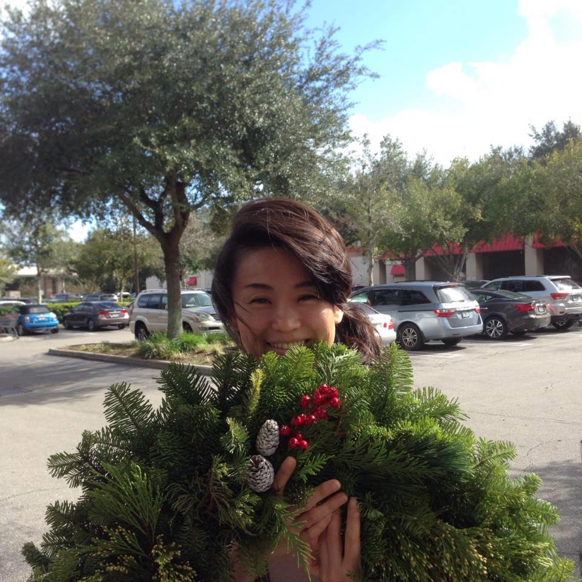

About Me

Hello! Welcome to my bio site!! My name is Hitomi, moved from Tokyo, Japan in 2014. I have been working for IT companies after graduating collage as COBOL programer and IT technical engineer for some applications. I love Snowboarding and Body boarding and I used to go to beaches, mountains everyweekends in Japan. But in the US, I mean after moving to Orlando I didn't do them because... no mountain and higher chance of shark attach than Japan... Anyway I'm enjoying my life here, recently many new restaurants open (I love to eat!) which always make me so happy! "JINYA RAMEN BAR", this is also a new place I have to go as soon as possile!